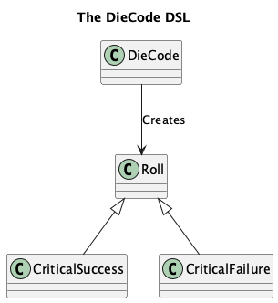
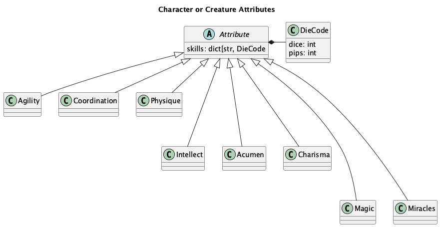
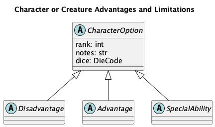

character¶
The opend6_tools.character module provides the DSL definitions for characters and creatures.
The module has a number of features for creating formatted displays of characters, working with creature or character definitions as command-line application, and extracting definitions from a Jupyter Lab notebook.
Dice¶
This is – to an extent – a duplicate of the opend6_tools.magic2.dice definitions.
The supplemental material is the Roll class hierarchy.

The DieCode is more than merely a definition of dice.
It can also roll to generate values for strength damage and body.
This includes the OpenD6 “Wild Die” rules, creating values with a somewhat larger distribution than a handful of dice.
Defining Characters and Creatures¶
Because the make tool relies on file definitions, it helps to isolate creature and character definitions into distinct Python modules. Any of a number of organizing principles could be used for creatures, including likely environments, or the number of dice in their budget. Keeping creature and character definitions in separate files makes testing and publication relatively straightforward because the make tool can build the required RST-format files automatically.
This leads to the following ways in which the opend6_tools.character module is used:
An character or creature module imports the
opend6_tools.charactermodule to define character or creatures. Ordinary software testing techniques validate sure the syntax is correct. A__test__block can be used to apply doctest tools can for validating the dice budget.The character or creature module is also an application with a CLI that can emit RST-format files for publication, debugging output, or detailed displays of the definitions.
The top-level organization of Character and Creature modules in the context of campaign books is what a software architect might call an “aggregate root.”
A module is a container for one or more related Characters or Creatures.
The source is a creatures_subsection.py file with the Python version of the creature definitions.
![@startuml
'https://plantuml.com/class-diagram
title Campaign Documents
package python {
package opend6_tools {
component character
}
}
package document_source {
artifact index.rst <<RST>>
artifact characters.rst <<RST>>
index.rst -> characters.rst : """toctree::"" directive"
package characters {
component characters_subsection.py <<app>> {
component SomeCharacter
}
artifact characters_subsection.txt <<RST>>
characters_subsection.py ..> character : import
}
characters_subsection.py -> characters_subsection.txt : "Run with 'display'"
characters.rst --> characters_subsection.txt : """include::"" directive"
}
@enduml](_images/plantuml-6a872908b4871e7511b8508b89f862d2c44495ad.png)
Often, the characters or creatures are created interactively, using Jupyter Lab.
This means the opend6_tools.notebook_extract builds the module from the notebook.
For more information, see notebook_extract app.
The structure within the character or creature definition module is often a Python list object.
A Character is an object with a number of other Attributes and Options.
Here is the essential structure:
![@startuml
'https://plantuml.com/class-diagram
title Character or Creature Module Components
object "list[Creature]" as book
object Creature {
name
attributes
options
}
book *-- "1..m" Creature
object Attribute {
description
dice
}
Creature *-- "6..7" Attribute
object Option {
description
dice
}
Creature *-- "0..m" Option
object "~_~_test~_~_" as test
book <.. test
object app {
display
debug
}
book <.. app
@enduml](_images/plantuml-9cf9eab0ad920bfd6282f6a20366d4b78bb44b9b.png)
The Character definition is almost identical to the Creature definition.
A creature can have a collection of abilities that are natural abilities. These come from the pool of Special Ability definitions, but don’t have an associated cost.
Character and Creature DSL¶
A Character (and a Creature) is a collection of descriptive strings.
For the purposese of computing the dice budget, there are Attribute objects and a number of distinct OptionList objects.
![@startuml
'https://plantuml.com/class-diagram
title Character or Creature classes
class Character {
name: str
occupation: str
race: str
gender: str
age: str
height: str
weight: str
physical_description: str
agility: Agility
intellect: Intellect
coordination: Coordination
acumen: Acumen
physique: Physique
charisma: Charisma
extranormal: Magic | Miracles
advantages: OptionList
disadvantages: OptionList
special_abilities: OptionList
equipment: str
description: str
realm: str
fate_points: int
character_points: int
.. computable ..
move: int
strength_damage: DieCode
body: int
finds: DieCode
}
abstract class Attribute
Attribute <|-- Agility
Attribute <|-- Coordination
Attribute <|-- Physique
Attribute <|--- Intellect
Attribute <|--- Acumen
Attribute <|--- Charisma
Attribute <|---- Magic
Attribute <|---- Miracles
Character *-- "{6..7}" Attribute
/'Character *-- Agility
Character *-- Intellect
Character *-- Coordination
Character *-- Acumen
Character *-- Physique
Character *-- Charisma
Character *-- Magic
Character *-- Miracles
'/
Character *-- OptionList : "advantages\ndisadvantages\nspecial_abilities"
class OptionList <<list[CharacterOption]>>
abstract class CharacterOption
OptionList *-- "0..m" CharacterOption
abstract class Disadvantage
CharacterOption <|-- Disadvantage
abstract class Advantage
CharacterOption <|-- Advantage
abstract class SpecialAbility
CharacterOption <|-- SpecialAbility
class Creature {
natural_abilities: OptionList
}
Character <|-- Creature
Creature -- OptionList : "natural abilities"
@enduml](_images/plantuml-a70c350bf22c79b0746a5689d7fbe305853729e9.png)
The character has a wide variety of features.
Attributes¶
A Character (and most creatures) have six required attributes. There are three physical and three mental attributes. Optionally, some characters or creatures may have an Extranormal, attribute.
While the game play consequence of each attribute are profound, from the perspective of defining a character, they’re all essentially identical.

The attributes (and skills) have a simple, uniform
definition.
Each skill description has a name and a DieCode cost.
During game play, the skill defines how many dice are rolled
to overcome difficulties.
Any skill without a specific budget defaults to the DieCode cost of the controlling Attribute for that skill.
Options¶
Beyond the core attributes, a character or creature may have options. There are three distinct types of character options.
For creatures (and some non-human characters) an option may be identified as a “natural ability”. This small shift in terminology permits pigs to fly, by calling the special ability of flight a natural ability.

Each of these subclasses – Disadvantage, Advantage, and SpecialAbility – is the parent of a flat collection of subclasses.
The only unique feature to each subclass is the costs-per-rank of the option.
Here are the subclasses of Disadvantage:
AchillesHeel
AdvantageFlaw
Age
BadLuck
BurnOut
CulturalUnfamiliarity
Debt
Devotion
Employed
Enemy
Hindrance
Infamy
LanguageProblems
LearningProblems
Poverty
Prejudice
Price
Quirk
ReducedAttribute
Outside the Fantasy rules, this additional disadvantage is added in the unpublished Magic rules.
MinorStigma
Here are the subclasses of Advantage:
Authority
Contacts
Cultures
Equipment
Fame
Patron
Size
TrademarkSpecialization
Wealth
The Special Abilities include a class-level rank_cost value that’s not simply set to one.
Each special ability has a distinct rank cost.
Here are the subclasses of SpecialAbility:
AcceleratedHealing
Ambidextrous
AnimalControl
ArmorDefeatingAttack
AtmosphericTolerance
AttackResistance
AttributeScramble
Blur
CombatSense
Confusion
Darkness
Elasticity
Endurance
EnhancedSense
EnvironmentalResistance
ExtraBodyPart
ExtraSense
FastReactions
Fear
Flight
GliderWings
Hardiness
Hypermovement
Immortality
Immunity
IncreasedAttribute
InfravisionUltravision
Intangibility
Invisibility
IronWill
LifeDrain
Longevity
LuckGood
LuckGreat
MasterOfDisguise
MultipleAbilities
NaturalArmor
NaturalHandWeapon
NaturalMagick
NaturalRangedWeapon
Omnivorous
ParalyzingTouch
PossessionLimited
PossessionFull
QuickStudy
SenseOfDirection
Shapeshifting
Silence
SkillBonus
SkillMinimum
Teleportation
Transmutation
UncannyAptitude
Ventriloquism
WaterBreathing
YouthfulAppearance
Display and Output¶
The output features of this module perform a number of output conversions for characters and creature definitions.
![@startuml
'https://plantuml.com/class-diagram
title character module output features
class CharacterWriter {
base_template: str
list_template: str
dict_template: str
report(spell | book) -> str
}
class CharacterWriter_Short
CharacterWriter <|-- CharacterWriter_Short
class CharacterWriter_Long2
CharacterWriter <|-- CharacterWriter_Long2
class CharacterWriter_Table
CharacterWriter <|-- CharacterWriter_Table
class CharacterWriter_Literal
CharacterWriter <|-- CharacterWriter_Literal
class "detail(character | creature)" as detail << (F,orchid) Function >>
hide detail empty members
detail --> CharacterWriter
class "display(character | book)" as display << (F,orchid) Function >>
hide display empty members
class "debug(character | book)" as debug << (F,orchid) Function >>
hide debug empty members
debug --> display
class "sheet(character)" as sheet << (F,orchid) Function >>
hide sheet empty members
sheet --> CharacterWriter
@enduml](_images/plantuml-b436880f0ea39e36cb32be6e81b84f54b726c3cf.png)
Plus functions summary(), detail(), sheet() And display(), debug()
Workbook Features¶
This module has a few functions for extracting characters or creatures from a Jupyter Lab Notebook.
Generally, these functions are designed to be part of a notebook, and introspect the notebook by looking at the globals() mapping.
Application Wrapper¶
This module has a few functions to build elements of a spellbook application.
These functions serve to create a CLI application using the typer library.
Generally, these are used as follows:
from opend6_tools.character import *
# Character or Creature definitions
creatures = [...]
if __name__ == "__main__":
app = build_app(creatures)
app()
This will – when run from the command line – build the application around spells (or items) defined in the module.
It will then launch the application.
This will parse command-line parameters and execute one various alternative sub-commands: test, debug, or display.
Implementation¶
OpenD6 Character and Creature Definition DSL.
Example¶
>>> from random import seed
>>> seed(42)
>>> from opend6_tools.character import *
>>> human = Character(
... occupation="Default", race="Human"
... )
>>> human.physique.dice
3*D
>>> human.extranormal.dice
0*D
>>> human.budget_check(CharacterBudget.NORMAL)
{'Attributes': '18D out of 18D', 'Skills': 'Nothing out of 7D', 'Options': 'Nothing'}
>>> human.budget
{'Attributes': 18*D, 'Skills': 0*D, 'Options': 0*D}
>>> w = CharacterWriter_Literal()
>>> print(w.report(human))
.. rubric:: OpenD6 Fantasy
+--------------------------------------------------+
| Character Name: ________________________________ |
+--------------------------------------------------+
| Occupation: Default |
+-------------------------+------------------------+
| Race: Human | Gender: ______________ |
+----------------+--------+-------+----------------+
| Age: ________ | Height: ______ | Weight: ______ |
+----------------+----------------+----------------+
| Physical Description ___________________________ |
+--------------------------------------------------+
::
+----------------------+----------------------+----------------------+
| Agility 3D | Intellect 3D | |
+----------------------+----------------------+----------------------+
| acrobatics | cultures |**Advantages**: |
| climbing | devices |**Disadvantages**: |
| combat | healing |**Special Abilities**:|
| contortion | navigation |**Equipment**: |
| dodge | reading/writing |**Description**: |
| fighting | scholar | |
| flying | speaking | |
| jumping | trading | |
| melee combat | traps | |
| riding | ____________________ | |
| stealth | ____________________ | |
| ____________________ | ____________________ | |
| ____________________ | ____________________ | |
+----------------------+----------------------+ |
| Coordination 3D | Acumen 3D | |
+----------------------+----------------------+ |
| charioteering | artist | |
| lockpicking | crafting | |
| marksmanship | disguise | |
| pilotry | gambling | |
| sleight of hand | hide | |
| throwing | investigation | |
| ____________________ | know-how | |
| ____________________ | search | |
| ____________________ | streetwise | |
| ____________________ | survival | |
| ____________________ | tracking | |
| ____________________ | ____________________ | |
| ____________________ | ____________________ | |
+----------------------+----------------------+ |
| Physique 3D | Charisma 3D | |
+----------------------+----------------------+ |
| lifting | animal handling | |
| running | bluff | |
| stamina | charm | |
| swimming | command | |
| ____________________ | intimidation | |
| ____________________ | mettle | |
| ____________________ | persuasion | |
| ____________________ | ____________________ | |
| ____________________ | ____________________ | |
| ____________________ | ____________________ | |
| ____________________ | ____________________ | |
| ____________________ | ____________________ | |
| ____________________ | ____________________ | |
+----------------------+----------------------+----------------------+
| Magic ________ | | |
+----------------------+----------------------+----------------------+
| alteration | Str Damage 2D | Body Points 28 |
| apportation | Move 10 | [ ] Stunned 17-21 |
| conjuration | Fate Pts 1 | [ ] Wounded 11-16 |
| divination | Character Pts 5 | [ ] Severe 6-10 |
| ____________________ | Funds 3D | [ ] Incapac'd 3-5 |
| ____________________ | Silver 180 | [ ] Mortal 1-2 |
| | | [ ] Dead |
+----------------------+----------------------+----------------------+